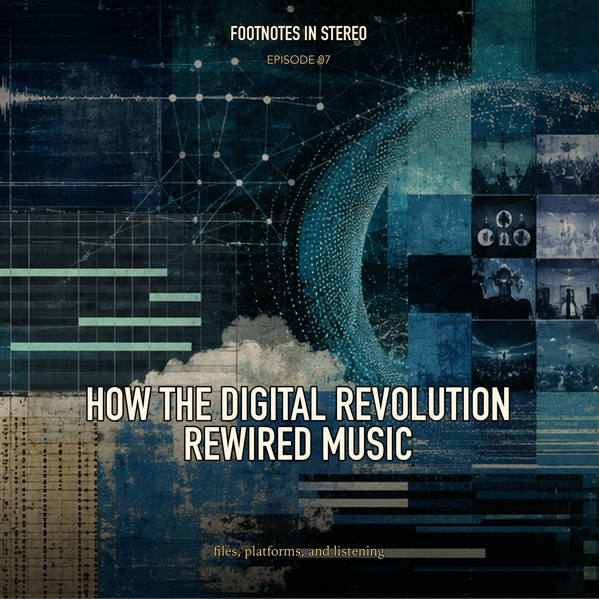

Episode 7 · Public episode
How the Digital Revolution Rewired Music
Recorded music used to move through records, radio, stores, studios, and labels. Then DAWs, MP3s, Napster, iTunes, streaming catalogs, recommendation systems, TikTok, and direct-to-fan tools rearranged the whole circuit. Mira and Theo trace how the internet changed who could make music, who could find it, and who got paid when listening became data. Created with Gemini Notebook.
Sources
- A&M Records, Inc. v. Napster, Inc., 239 F.3d 1004 (9th Cir. 2001) - Copyright
- Digital Performer - Wikipedia
- Digital audio workstation - Wikipedia
- HOW THE INTERNET HAS CHANGED THE MUSIC INDUSTRY - Recording Connection
- Hours after TikTok being Shut Down... - Reddit
- Music Genome Project - Wikipedia
- The Evolution of the Music Industry in the Digital Age: From Records to Streaming - Clausius Scientific Press
- The Impact of Digital File Sharing on the Music Industry: An Empirical Analysis - RIAA
- The Impact of Technology on the Music Industry - Southern Utah University
- The Resounding Impact of Napster, Inc. An Analysis of A & M Records, Inc. v. Napster, Inc. - Scholarship @ Claremont
Transcript
Machine transcript; lightly formatted and subject to correction.
Transcript processing. Check back shortly.